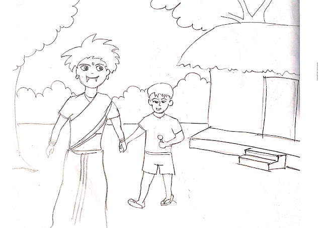

There was a small village called Dholakpur. Everyone in that village lived in peace. Suddenly one day Petney was harassed in that village. Petney would pick up a small child as soon as he saw it, and that Petney would take the form of any human being. So no one could catch that petni. Talking about this, Ramesh and Jadu were returning home after finishing work from the field. Ramesh said I have only one son so I am very scared because one day my son will not be picked up by that petni. Jadu said yes brother I am really worried too. Because that petni takes the form of any human being, so it cannot be understood. One day he took my form and took my son away

They came home talking about this. When Jadu came home, Jadu's son said, "Daddy, I will eat lozenges." Jadu said now is not the time to eat lozenges. After washing his hands and feet, he left. In a moment, Petney came home in the form of magic. He said to the magical son, will father eat Lawrence? The boy said yes, I will eat. Then Jadu takes him out of the house, At that time I met Jadur's wife. Where are you going with your son when the wife said? Jadu said I am taking him to eat lozenges and I will leave immediately. Saying this, Jadu went out. Meanwhile, after a while, when Jadu washed his hands and feet and entered the room, Jadu's wife asked, "Where is Kigo's son?" Jadu said why he is at home. Jadur's wife said that if you go out with your son now, he will eat lozenges. Then Jadu realized that Petney had come in her form today and left with her son. Then Jadu came out and started shouting and calling the people of the neighborhood. Just then he saw Petney flying in the sky with his son.
In this way, one by one, many sons started leaving the village. So as little as there were boys in the village in the afternoon, everyone was hidden in the house, not letting anyone out. One day Palash started crying to go out in the evening. But his mother kept him in the house for fear of Petney. Meanwhile, Petney heard the sound of crying and entered the room in the form of Palash's mother and took Palash out saying to turn him outside. Then when Palash's mother went home to look for Palash, she saw that Palash was not in the house. Then he went out of the house and saw Petney leaving with his son. Thus one by one Petni took away all the boys of the village. And only a handful of boys are left. So everyone organized a meeting. Then someone said that there is a good saint in the next village. He has a lot of power. He can come up with a solution to this problem if he wants.
So everyone decided that they would go to see the saint the next day. The saint was surprised to see everyone together and asked what had happened. Why are you so scared? Then everyone told the saint about Petni. Now the saint closed his eyes for a moment. He opened his eyes and told everyone that all your boys are healthy and normal. But they are trapped in a cave. Petney has imprisoned everyone in that cave. The villagers told the saint that then the father should make some arrangements to bring our son back. Then the saint closed my eyes and after a while he opened his eyes and said that one of you should go with that petni and find the cave. Then the villagers said that the petni does not raise anyone except the child, only the children. Then the saint said, "I can give birth to one of you." He will go with that petni and find it. Petney was terrified of everyone, So no one was willing to be a child. But Palash's father was very brave and he said I agree to go.
Then Sadhu made Palash's father a child by magic. He told her to go with Petney, I'm giving you some ashes, she'll cut a stain with it outside the cave. Petney can't come out of this spot. Palash's father started wandering outside the village in the evening and as usual Petni came and picked him up. As I was taking it, I started saying, today I have 100 children. And as soon as I have a child, I will become stronger by sacrificing one hundred and one children to the devil. With that Petney took him into a cave. Going there, Palash's father saw everyone. Now Petney began to say that if I had another child, I would be successful. Let's see if we can find someone outside once again. Saying this, Petney went out.
Meanwhile, Palash's father brought all the children out one by one. And who told them to go straight to the village and Palash's father himself waited by the side of the cave until Petni arrived. After a while Petney returned empty-handed and went into the cave. On that occasion, Palash's father cut a stain with the ashes given by the saint outside the cave. Petney went into the room and saw no children. Then he came out. But as soon as he stepped on the spot to get out, fire started burning in his body. Frightened, he entered the cave. The next day all the villagers closed the mouth of the cave with a big stone. They lived happily ever after.